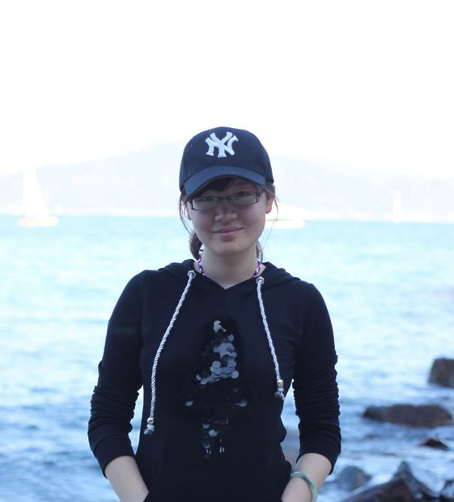

|
|
Office: 4208
|
|
|
Email:
idagoo@cse.ust.hk
|
|
|
|
Yida Tao （陶
伊达）
PhD Student
Department of Computer Science and Engineering
The Hong Kong University of Science and Technology
Clear Water Bay, Kowloon, Hong Kong
Research Area: Software Technologies
Advisor: Sunghun
KIM
Research Interest
My research focuses on understanding developers' common
practice in evolving software, exploring their information
needs and difficulties, and developing tools to improve
their daily productivity. Related interests involve program
comprehension, change impact analysis, empirical study,
repository mining and developer social network.
Publications
- "How Do Software
Engineers Understand Code Changes? An Exploratory
Study in Industry" by Yida Tao, Yingnong Dang, Tao
Xie, Dongmei Zhang and Sunghun Kim. In Proceedings of
the 20th ACM SIGSOFT International Symposium on the
Foundations of Software Engineering (FSE 2012), Research
Triangle Park, North Carolina, November 11-16, 2012
- "Where Should We Fix This Bug? A Two-phase Recommendation Model" by Dongsun Kim, Yida Tao, Sunghun Kim, and Andreas Zeller. The IEEE Transactions on Software Engineering (TSE), to appear.
Education
Work Experiences
- Fall 2012: Teaching Assistant for COMP3111:
Introduction to Software Engineering
- Spring 2012: Teaching Assistant for COMP3111:
Introduction to Software Engineering
- Aug. 2011 ~ Jan. 2012: Internship at Microsoft
Research Asia (MSRA), Software
Analytics Group
- Sept. 2010 ~ Jul. 2011: Research Assistant
|